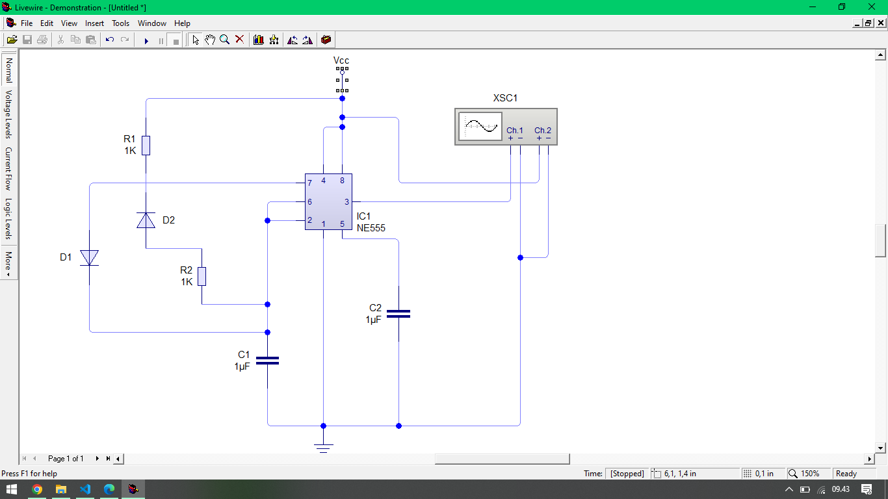

Rangkaian astable adalah jenis rangkaian osilator elektronik yang menghasilkan gelombang keluaran berupa sinyal persegi yang terus-menerus berubah antara tingkat logika tinggi dan rendah tanpa adanya sinyal input eksternal. Rangkaian ini umumnya digunakan dalam pembuatan sinyal berulang seperti pulsa atau clock pada berbagai aplikasi elektronik
Keterangan :
Gif di atas merupakan contoh tampilan PWM Astable saat menggunakan Oscilloscope
rangkaian astable multivibrator adalah rangkaian untuk membuat sebuah pulsa PWM kotak dengan frekuensi dan lebar pulsa tertentu, ini biasanya digunakan untuk lampu sen sepeda motor, lampu berkedip, mengendalikan kecepatan putaran motor dc dengan pwm, lampu hemat energi, dan lain sebagainya, output dari astable multivibrator adalah continue, jadi selalu berulang berbeda dengan monostable multivibratot, rangkaian ini hanya aktif jika terdapat trigger atau pemicu, jika tidak ada pemicu maka output akan 0, monostable multivibrator biasa digunakan untuk delay suatu sistem / alat misalnya alarm rumah yang mana ditekan sekali maka akan menghasilkan suara yang lama

Multivibrator astable mempunyai dua keadaaan namun tidak stabil pada salah satu diantaranya, dengan kata lain multivibrator akan berada pada salah satu keadaannya selama sesaat dan kemudian berpindah yang lain, disini multivibrator menetap untuk sesaat, sebelum berpindah kembali ke keadaan semula. Perpindahan pulang pergi yang berkesinambungan ini menghasilkan suatu gelombang segi empat.
Multivibrator Astable bisa secara terus menerus beralih antara satu kondisi dan lainnya ini memungkinkan Multivibrator Astabil untuk memberi daya dan melakukan pekerjaan yang konsisten Multivibrator Astable relatif murah untuk diproduksi, relatif sederhana dalam desain dan dapat tetap berfungsi untuk waktu yang sangat lama.